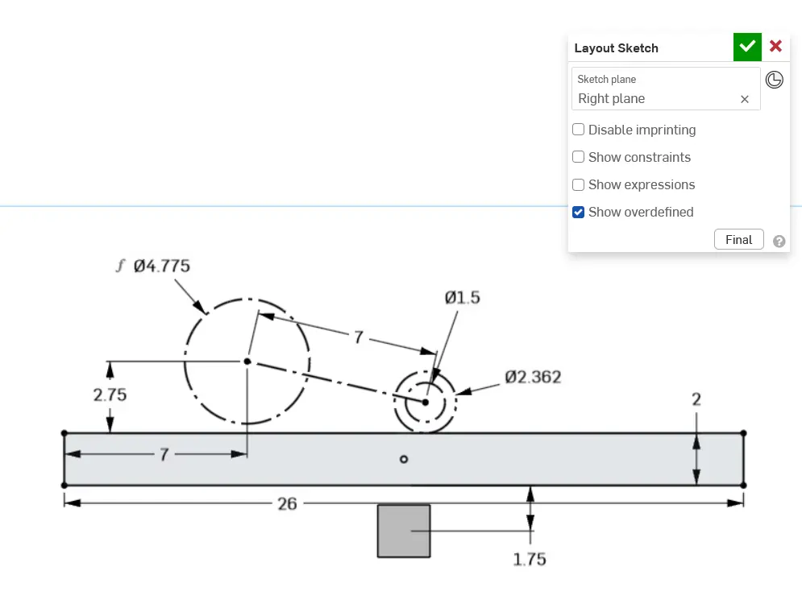
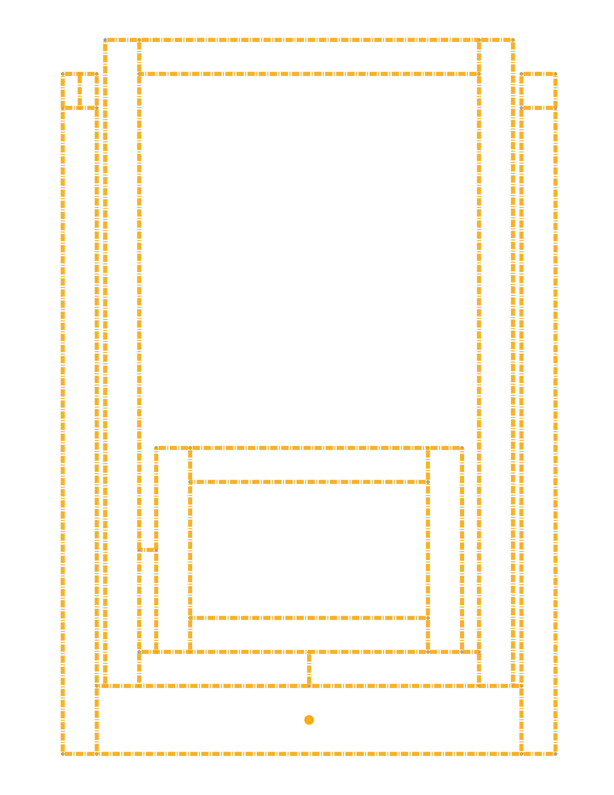
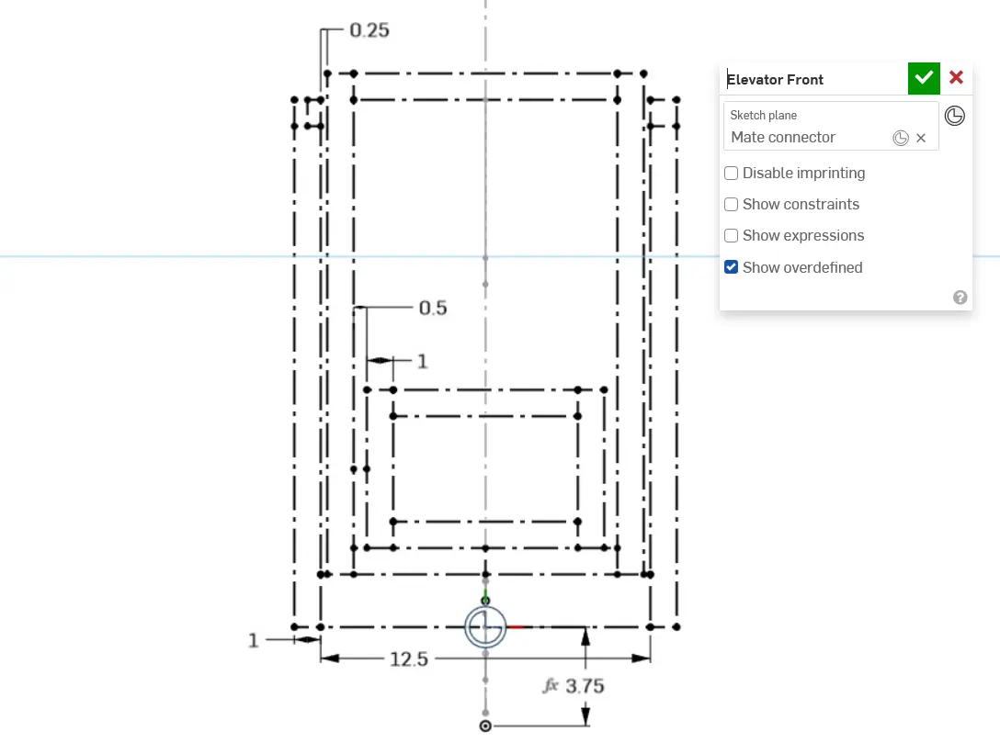

Robot Design
国际常见的 Top-Down 机器人设计
用 FRC 赛队主布局草图讲清 Top-Down 设计思路
这一页不是单纯展示 FRC 图片，而是借助国际强队常见做法，帮助 MakeX 队伍理解为什么要先做整机约束，再做零件细化。
本页核心结论
Top-Down 设计的核心不是先做零件，而是先锁定整机任务、空间边界、机构关系和比赛动作路径。国际强队这样做，是为了更早发现冲突、统一团队理解，并让后续参数推导和策略规划都有依据。
先搭主布局先在主草图里确定底盘尺寸、机构行程和关键边界，再展开后续设计。
围绕任务设计让机构路径、得分动作和场地约束在同一张主图里对齐，避免后期冲突。
便于团队协作主草图明确以后，底盘、升降、投射和夹取等子系统更容易并行推进。
Top-Down 与 Bottom-Up 的区别
Top-Down 设计图示例
保留一张最清晰、最适合讲解的 FRC 主布局草图作为核心案例，同时加入一张机构运动示意图，用来补充说明动作路径与空间包络。

典型的 Top-Down / Master Sketch，用于先确定底盘、机构范围和场地关系。用这一张图就足以说明“先做整机约束，再展开细化设计”的核心方法。

适合说明旋转机构如何先定义关键角度、干涉区和安装关系。

适合说明升降机构如何先锁定行程、极限位置和主结构关系。

适合从正视图补充说明宽度、导向、支撑与对称关系。
来源与讲解提示
来源页来自 FRCDesign.org 的 Layout Sketch Best Practices，展示了 1778 赛队在 2024 赛季的主布局草图。
你可以结合这个案例强调：国际成熟赛队往往先从整体任务和空间规划出发，再进入详细零件和结构设计，这正是 Top-Down 设计的核心价值。
在 MakeX 中如何应用 Top-Down
设计时最容易犯的错误
分享讲解重点
我们不是学 FRC 机器人长什么样，而是学他们如何先做整机约束，再展开细化设计。
Top-Down 设计不是先做零件，而是先做整体约束。
一张好的主布局图，能帮助团队尽早发现尺寸冲突、行程不足和策略路径问题。
在示范机器人讲解中，可以把主草图和实体机构一一对应，帮助观众快速建立设计理解。
当主布局被确定以后，下一步不是继续把图画得更复杂，而是把其中的关键动作转成具体参数。这也是第二部分“参数寻找演示”的重点。